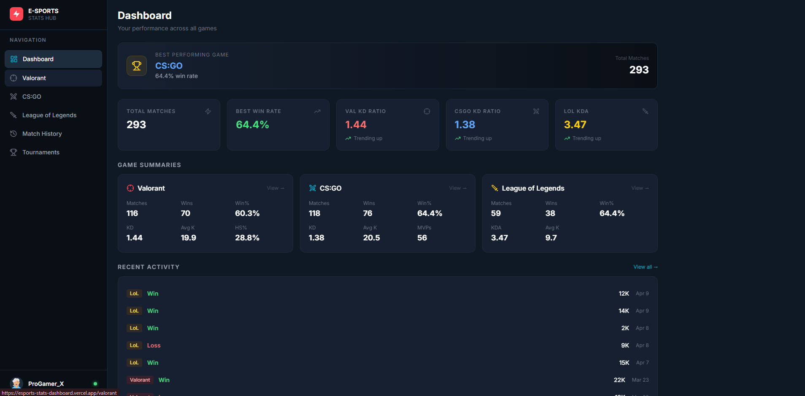
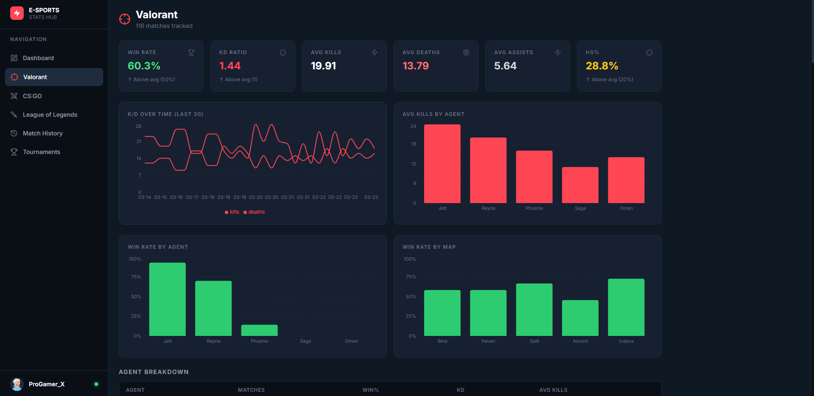
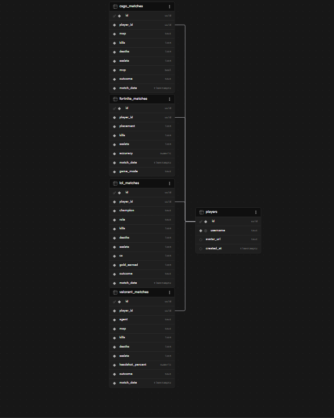
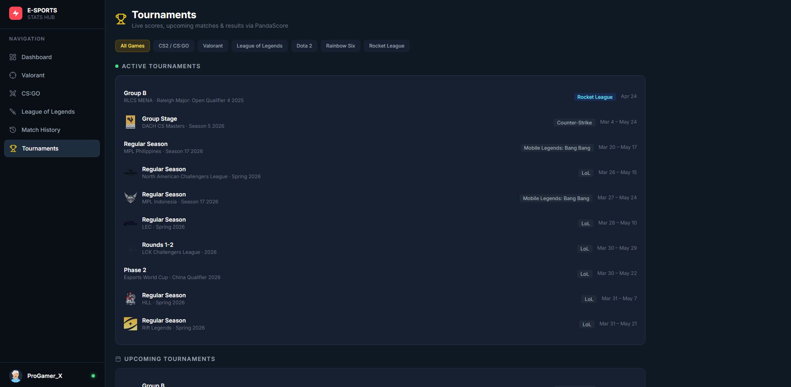

Building an E-Sports Stats Dashboard
After finishing up a Slay the Spire 2 run tracker in Supabase, I wanted to do something bigger with the same stack. I had been using Tracker.gg a lot and kept thinking about how they present game stats — dense, dark, everything you need at a glance without feeling cluttered. I wanted to try building something like that myself.
So I built a full e-sports stats dashboard covering three games: Fortnite, Valorant, and CS:GO. Each game has its own page with game-specific stats, a shared home dashboard that aggregates everything, and Recharts visualizations for performance trends over time.
What's In It
The home dashboard gives you a cross-game overview — KD ratio, win rate, average kills — and highlights your best performance across all three games with a highlight card at the top. From there you can drill into each game's individual page.

Each game page shows stats specific to that title. Valorant tracks agent, headshot percentage, and round win rate. Fortnite tracks placement, game mode, and elimination count. CS:GO tracks map, flash assists, and bomb plants. I wanted the per-game pages to feel native to each game rather than just slapping the same template on all three.
Every page also has a match history table with filtering, so you can look back at individual sessions. And there are two chart types: a line chart for performance over time and a bar chart breaking down kills per game. Dark theme throughout, intentionally data-dense.

Database Design
I used separate Supabase tables for each game's match history rather than trying to squeeze everything into one generic table. Each table has game-specific columns alongside shared ones like player_id, match_date, and kills.
| Table | Game-specific columns |
|---|---|
| fortnite_matches | placement, game_mode, eliminations |
| valorant_matches | agent, headshot_percent, round_wins |
| csgo_matches | map, flash_assists, bomb_plants |
| players | username, region, linked game accounts |
Keeping the tables separate made the schema cleaner and made it easier to write game-specific queries without a bunch of null columns everywhere. The tradeoff is that the cross-game aggregation queries on the home dashboard are a bit more involved — you have to union the results — but it was worth it.

The Backend
I used FastAPI for the backend, connected to Supabase via supabase-py with credentials in a .env file. The API exposes three main types of endpoints:
- Match history per game — paginated, with optional filters for date range and game mode
- Aggregated stats — KD ratio, win rate, average kills, computed server-side
- Dashboard summary — a single endpoint that returns the cross-game overview the home page needs
FastAPI was genuinely pleasant to work with. The automatic docs at /docs made testing endpoints fast, and the type hints kept things clean. I also already had Supabase set up from the STS2 tracker project, so reusing it as the backend for this made a lot of sense — same project, same credentials, just new tables.
@app.get("/stats/summary")
async def get_dashboard_summary(player_id: str):
fortnite = supabase.table("fortnite_matches") \
.select("kills, placement") \
.eq("player_id", player_id).execute()
valorant = supabase.table("valorant_matches") \
.select("kills, headshot_percent") \
.eq("player_id", player_id).execute()
csgo = supabase.table("csgo_matches") \
.select("kills, flash_assists") \
.eq("player_id", player_id).execute()
return aggregate_summary(fortnite.data, valorant.data, csgo.data)
What I Took Away
This was my first time putting React, FastAPI, and Supabase together in one project. Each piece I had used before in isolation, but wiring them together as a full stack taught me a lot about how data flows through the layers — from the database, through the API, into state on the frontend, and out into charts.
FastAPI was the standout for me. Coming from Flask, the automatic validation and the interactive docs felt like a big quality-of-life upgrade. I'll definitely reach for it again.
The obvious next step is swapping the seeded test data for real API data from the game publishers. Riot has a public API for Valorant stats, and there are community APIs for Fortnite. Getting live data in there would make this actually useful rather than just a working demo. That's the next version.
Questions or suggestions? Feel free to reach out via GitHub or connect with me on LinkedIn.